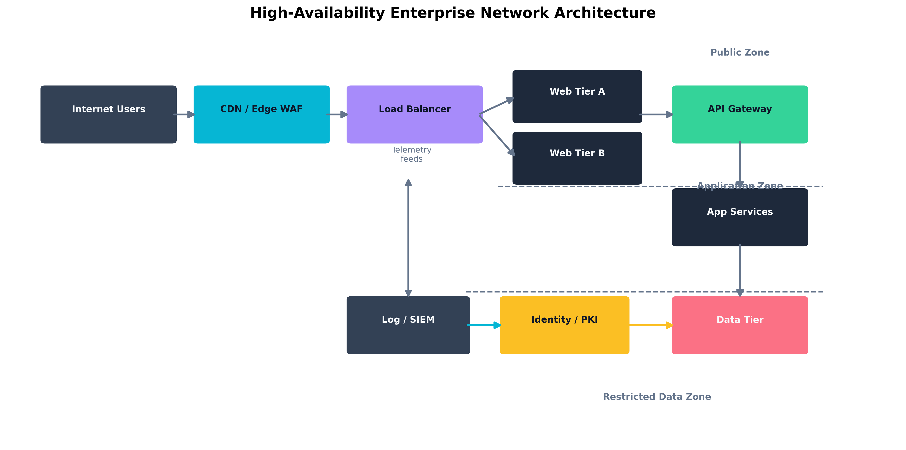
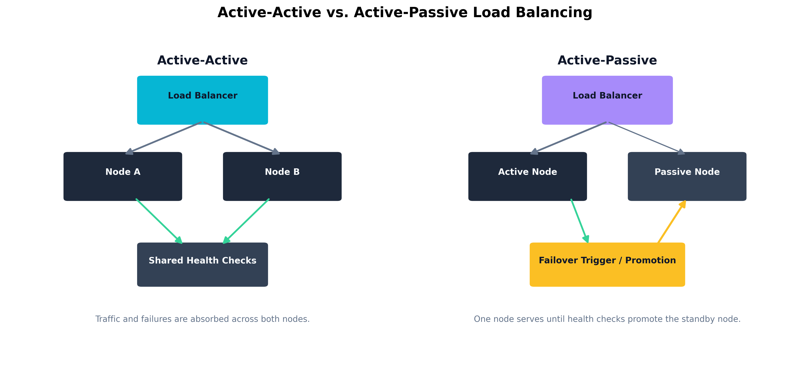
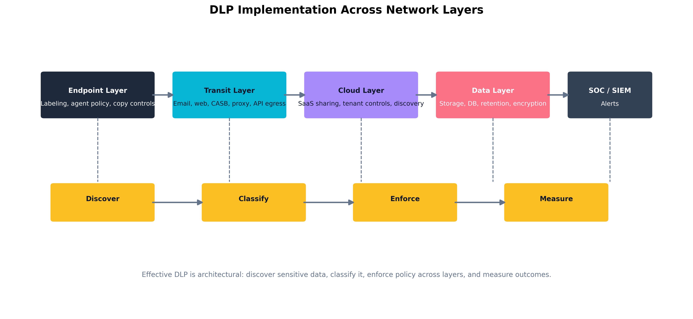

Chapter 4: Principles of Security Architecture and Zero Trust
Learning Outcomes:
- Analyze security requirements to determine optimal component placement.
- Design systems that incorporate load balancing, recoverability, and geographic considerations.
- Integrate Zero Trust concepts into system designs.
- Architect network segmentation and microsegmentation strategies.
- Apply deperimeterization concepts such as SASE and SD-WAN.
- Design information and data security models, including classification, labeling, and tagging strategies.
- Implement Data Loss Prevention (DLP) controls for data at rest and in transit.
- Evaluate the effectiveness of security controls using assessments, scanning, and metrics.
Introduction
The first three chapters covered governance, risk, and adversaries. This chapter shifts to architecture — where business intent becomes technical reality. Architecture is the discipline of deciding where controls belong, how trust is established, what must be segmented, where data may flow, and how the system holds together when something inevitably breaks.
Too often, controls get bolted on without architectural intent. A firewall is bought “because every enterprise needs one.” A VPN is added because remote work demands it. A WAF is deployed because the auditor asked. But a reverse proxy behind the wrong trust boundary can hide the telemetry defenders rely on; a DLP tool sitting only on the email gateway misses every cloud channel employees actually use; an IDS pinned to a quiet segment produces elegant dashboards and almost no defensive value. Architecture is the answer to one question: where should each control live so that it meaningfully reduces risk without damaging the business?
That question forces a shift from operator thinking to architect thinking. Operators tune the controls in front of them. Architects decide which controls should exist, how they should interact, and what assumptions the environment is allowed to make. The exam expects the architect’s perspective — placement, segmentation, recoverability, subject-object relationships, and the difference between a system that is merely hardened and one that is intentionally resilient.
The single most important architectural shift in modern cybersecurity is the move away from implicit trust. For decades, enterprises ran on a castle-and-moat model: get inside the perimeter and you were trusted. Cloud services, remote work, APIs, contractors, and mobile devices have dissolved that perimeter. In its place, architects now adopt Zero Trust: never trust by location alone, validate access continuously, and assume compromise is always possible (Rose et al. 2020).
In this chapter we walk component placement (firewalls, IPS, IDS, WAFs, proxies, API gateways, VPN concentrators, NAC), then resilience patterns (scaling, recovery, geographic distribution), then Zero Trust as a design philosophy (segmentation, microsegmentation, continuous authorization, SASE, attestation), and finally the data side — classification, labeling, DLP, hybrid boundaries, and the metrics that tell you whether the architecture is actually working. By the end you should be able to look at an enterprise environment and ask not just “what controls exist?” but “why are they placed there, what assumptions do they enforce, and what happens when those assumptions fail?”
How Do We Architect Resilient Systems?
The first responsibility of the security architect is deciding how the system should fail. That may sound strange. Most executives ask how to prevent failure, not how to engineer it. But resilient systems are not systems that never fail. They are systems that fail predictably, recover quickly, preserve integrity under stress, and do not let one broken component collapse the entire business.
Security architecture is therefore inseparable from resilience architecture. You cannot decide where to place a control unless you understand how traffic flows, where trust boundaries sit, how state is maintained, which assets must remain available, and which dependencies are allowed to break. A beautifully hardened application tier is meaningless if the identity provider is a single point of failure. A geographically distributed web platform is still fragile if the session store is pinned to one data center. A VPN may provide secure access, but if every remote employee depends on one overloaded concentrator, security has been achieved at the cost of availability.
When architects evaluate resilience, they are usually answering four design questions:
- What must stay available? Some systems may tolerate delay; others directly stop the business when they fail.
- What must remain trustworthy? Availability without integrity can be worse than outage.
- Which dependencies are hidden? Identity, DNS, certificates, and secrets platforms often fail silently until everything else breaks.
- Where can we safely degrade? Mature systems fail in a controlled way rather than collapsing all at once.
Component Placement and Configuration
Architects begin by thinking in layers. Not because the OSI model solves every problem, but because layered thinking helps identify where specific controls add the most value.
In practice, component placement decisions are usually driven by a small set of architectural criteria:
- Trust boundary clarity: Is this where trusted and untrusted traffic actually meet?
- Operational tolerance: Can the business tolerate latency, blocking, or aggressive inspection at this point?
- Visibility value: Will placing the control here generate useful telemetry or just noise?
- Blast radius reduction: If this layer fails, how much of the environment is exposed?
At the network edge, the most familiar control is the firewall. Firewalls enforce broad allow and deny decisions about traffic entering or leaving a trust boundary. They are excellent at policy enforcement, basic segmentation, and reducing unnecessary exposure. However, a firewall is not a universal answer. It does not inherently understand application logic, suspicious sequences of events, or business context. Its value is greatest when it sits on clear trust boundaries: internet-to-DMZ, partner-to-extranet, production-to-administration network, or user-segment-to-sensitive data zone.
An Intrusion Prevention System (IPS) is commonly placed inline where it can inspect traffic in real time and actively block malicious patterns. This makes it powerful, but also operationally sensitive. Misplaced IPS devices can become chokepoints, introduce latency, or generate outages if signatures are too aggressive. A mature design often places IPS capabilities where high-value traffic crosses major trust boundaries and where teams can operationally support tuning. By contrast, an Intrusion Detection System (IDS) is usually deployed out of band. It sees traffic and raises alerts but does not block. IDS placement is valuable where defenders want visibility without risking production impact, especially on sensitive east-west traffic that is often poorly monitored.
Key Point The difference between an IDS and an IPS is not just alerting versus blocking. It is a difference in operational risk. An IPS must be tuned to avoid breaking the business. An IDS must be integrated well enough that its alerts still matter.
Web Application Firewalls (WAFs) live closer to the application layer. Their job is not to replace the edge firewall but to understand web-specific threats such as SQL injection, cross-site scripting, malicious request patterns, and bot abuse. WAFs are most effective when placed in front of internet-facing applications, APIs, and portals that handle untrusted input. They are especially important where the organization must protect a business service that cannot be simply “closed off” from public traffic.
Proxies and reverse proxies are often confused because they both mediate traffic. A forward proxy stands in front of users, controlling or observing outbound requests. It is useful for acceptable-use enforcement, malware detonation, TLS inspection, and data egress controls. A reverse proxy stands in front of servers, protecting internal services from direct exposure, handling SSL/TLS termination, distributing traffic, and hiding backend topology. From an architectural standpoint, the placement question is not which proxy is better, but what side of the trust boundary needs mediation.
API gateways deserve their own mention because modern enterprises are increasingly API-driven. Many business processes that once relied on browsers and human users now run through machine-to-machine calls. API gateways enforce authentication, authorization, rate limiting, request validation, version management, and logging for those calls. Their placement should reflect that APIs are not just another web page. They are programmable trust boundaries. If a traditional web portal serves humans and an API serves mobile applications, partners, and internal automations, the API gateway becomes a primary security control rather than a convenience feature.
Virtual Private Network (VPN) concentrators and gateways are another classic placement problem. The insecure design is to treat the VPN as a magic door into the internal network. The mature design treats VPN as one control in a broader architecture. Users should not inherit broad internal access simply because they successfully built an encrypted tunnel. Instead, the VPN should be used to create a secure transport channel, after which Zero Trust policy, segmentation, device posture, and application-layer controls determine what access is actually granted.
Network Access Control (NAC) is often deployed at the switching or wireless edge where endpoints first attempt to join the enterprise environment. NAC evaluates device posture, identity, certificates, or policy compliance before assigning a level of access. This makes it architecturally valuable as an early gatekeeper. It does not replace segmentation deeper in the network, but it reduces the risk that unmanaged or unhealthy devices receive the same network treatment as known-good corporate assets.
Some of the most neglected placement decisions involve visibility tools rather than blocking tools. Network taps and collectors exist so the organization can observe what the environment is actually doing. A tap placed on the wrong segment produces elegant but irrelevant data. A collector that receives only perimeter logs while missing identity events, cloud telemetry, and east-west communications creates a false sense of coverage. Mature architectures deliberately place taps and collectors where they illuminate high-value paths: administrative networks, identity systems, cloud control planes, application tiers, and critical data repositories.
Even vulnerability scanners require architectural thought. Internal scanners belong where they can safely evaluate broad asset populations without being blocked or mistaken for attacks. External scanners belong where they reveal how the organization appears from the public internet. Both are architectural controls because they influence asset discovery, attack surface management, and validation. A scanner locked away in a forgotten management VLAN is as ineffective as an unused alarm system.
Finally, Content Delivery Networks (CDNs) change security architecture by moving some controls outward. A CDN can absorb distributed denial-of-service traffic, cache static content, shield origin servers, and provide edge-layer WAF features. But architects must remain careful. Moving capabilities to a CDN does not eliminate origin security requirements. It simply changes where some controls execute.
| Component | Best Placement Goal | Primary Value | Common Architectural Mistake |
|---|---|---|---|
| Firewall | Major trust boundaries | Policy enforcement and segmentation | Treating it as the only layer of defense |
| IPS | Inline on critical high-risk flows | Real-time attack blocking | Causing outages through poor tuning |
| IDS | Out-of-band visibility points | Detection without production impact | Generating alerts no one investigates |
| WAF | In front of public web apps and APIs | Web-layer attack mitigation | Deploying it with default rules and no app context |
| Proxy / Reverse Proxy | User egress or server ingress mediation | Traffic mediation and control | Confusing user-side and server-side use cases |
| API Gateway | In front of exposed service interfaces | AuthN, AuthZ, validation, rate limiting | Treating APIs like ordinary websites |
| VPN | Secure transport entry points | Confidential remote connectivity | Granting broad internal trust after tunnel creation |
| NAC | Endpoint onboarding edge | Device posture and identity enforcement | Assuming NAC alone replaces segmentation |
| Taps / Collectors | High-value telemetry paths | Visibility and detection | Collecting low-value logs while missing critical flows |
| CDN | Edge distribution layer | DDoS resistance and origin shielding | Assuming the origin is now safe by default |
Quick Check 4.1
- Recall. What is the operational difference between an IDS and an IPS?
- Discriminate. If the goal is to mediate and inspect outbound user web traffic, do you place a forward proxy or a reverse proxy?
- Apply. A mobile app and several partners call business services directly. Which control should sit in front of that interface, and what two jobs should it do?
Answers — Quick Check 4.1
- IDS alerts out of band; IPS sits inline and can block traffic, which also makes it riskier to mis-tune.
- A forward proxy. A reverse proxy protects server-side ingress, not user-side egress.
- An API gateway. It should authenticate callers and validate or rate-limit requests before they reach the service.
Availability and Integrity by Design
Security architects must think beyond blocking attacks. They must also preserve service delivery and data trustworthiness. This is where design decisions like load balancing, recoverability, interoperability, and geographic placement become part of security rather than mere infrastructure engineering.
Load balancing distributes work across multiple nodes so that one overloaded or failed system does not take down the service. In security architecture, load balancing also limits blast radius. If traffic can be shifted between healthy nodes, defenders gain the ability to isolate compromised instances without fully interrupting the service. The architect must decide whether the environment uses active-active or active-passive design. Active-active designs maximize availability but may increase synchronization complexity. Active-passive designs simplify failover logic but can hide dormant failure states if the passive environment is rarely exercised.
Recoverability is the architecture’s ability to restore business function after failure. This requires more than backups. It requires clear recovery order, tested dependencies, replacement procedures, and realistic time objectives. A resilient application stack may require the identity provider, database, secrets store, and DNS layer to recover in a specific sequence. Architects who only protect the application servers without modeling dependency recovery are not designing for resilience; they are designing for optimism.
Interoperability matters because enterprise systems rarely stand alone. Identity providers, ticketing platforms, monitoring systems, API consumers, third-party integrations, and cloud workloads all depend on each other. Interoperability becomes a security issue when a control is so isolated that it cannot share events, enforce consistent decisions, or support coordinated response. For example, a DLP solution that cannot consume classification tags or share alerts with the SIEM may be technically deployed but strategically disconnected.
Geographic considerations also shape resilience. Placing all critical services in a single region may simplify operations, but it makes the enterprise vulnerable to regional outage, legal disruption, and concentrated attack. Multi-region or multi-site deployment improves resilience, but it also introduces complexity around latency, data sovereignty, key management, and failover consistency. Architects must weigh the security benefits of distribution against the operational and legal complications it creates.
Warning Multi-region design is not automatically resilient. If every region depends on a single global identity service, certificate authority, or management plane, the architecture may still have a hidden centralized point of failure.
Scaling choices matter as well. Vertical scaling adds more capacity to a single node. It is simple, but it can amplify failure impact because the environment depends on larger, fewer systems. Horizontal scaling distributes workload across many nodes. It improves elasticity and fault tolerance, but demands stronger orchestration, state management, and telemetry. Security architects typically favor designs that can horizontally scale critical front-end workloads while carefully controlling where sensitive state resides.
This leads to the question of persistence versus non-persistence. Persistent systems maintain state over time. Non-persistent systems are rebuilt frequently or discarded after use. Non-persistent compute is attractive because it limits attacker dwell time and simplifies recovery, but not every workload can be stateless. Architects therefore decide where to preserve state and where to aggressively avoid it. Temporary web nodes may be non-persistent, while database clusters remain persistent but heavily segmented and monitored.
Example Consider a retail platform with internet-facing web servers, an API tier, and a payment database. The architect may choose horizontally scaled, non-persistent web servers behind a CDN and WAF; a segmented API layer behind an API gateway; and a tightly controlled, persistent database cluster with separate recovery procedures and stricter administrative access. The system is resilient not because every tier is treated the same, but because each tier is designed according to the kind of state and risk it carries.

Figure 4.1: A resilient enterprise design using layered controls, segmented trust zones, and failover-capable service tiers.
Figure 4.2: Comparing active-active and active-passive designs for resilient service delivery.Quick Check 4.2
- Recall. What is the difference between horizontal and vertical scaling?
- Discriminate. If every region depends on one global identity service or certificate authority, is the design truly resilient?
- Apply. In the retail example, which tier should be horizontally scaled and non-persistent, and which tier should remain persistent and tightly controlled?
Answers — Quick Check 4.2
- Horizontal scaling adds more nodes; vertical scaling adds more power to one node.
- No. The architecture still has a hidden centralized point of failure.
- The web tier can be horizontally scaled and non-persistent; the payment database should stay persistent, segmented, and tightly controlled.
What Does Zero Trust Actually Mean?
Zero Trust is one of the most abused phrases in cybersecurity. Vendors use it to market endpoint tools, identity suites, proxies, microsegmentation products, SASE platforms, and cloud access controls. Executives use it to signal modernity. Auditors use it to ask whether the organization has adopted contemporary architecture. The result is that many teams think Zero Trust is a product they can buy rather than a design philosophy they must implement.
At its core, Zero Trust rejects one assumption: that location alone creates trust. In a traditional perimeter model, users inside the network are treated differently from users outside it. In a Zero Trust model, access is granted based on verified identity, device posture, context, policy, and the specific resource request. Trust is narrow, conditional, and continuously reevaluated (Rose et al. 2020).
Continuous Authorization and Context-Based Reauthentication
Traditional access models often authenticate once and trust for the rest of the session. Zero Trust architectures instead favor continuous authorization. This does not mean constantly annoying users with password prompts. It means the environment continuously evaluates whether the conditions that justified access are still true.
If a user authenticated from a compliant corporate laptop in New York, then thirty minutes later the same session begins issuing impossible travel signals, connecting through anonymizing infrastructure, or requesting unusually sensitive resources, a Zero Trust architecture should react. That reaction may be reauthentication, reduced privilege, step-up MFA, session isolation, or outright termination.
This is where context-based reauthentication becomes essential. Access decisions may change based on geographic location, device compliance, time of day, recent administrative actions, user behavior analytics, resource sensitivity, or whether the session is invoking APIs versus browsing a portal. The architect’s task is not simply to turn on step-up authentication everywhere. It is to design meaningful decision points that improve security without collapsing usability.
Key Point Zero Trust does not eliminate usability trade-offs. It makes them explicit. Good architecture asks for stronger proof exactly when the risk justifies it, not at random moments that train users to resent security.
Example
Continuous authorization catching a stolen session token
Prospero’s team at Milan Island Telecom configures two risk signals in their identity platform:
- Impossible travel: A session that started in Chicago should not present requests from Eastern Europe within two hours.
- High-sensitivity resource: Access to the customer billing API is tagged as a high-privilege action in policy.
A call-center agent logs in from Chicago, passes MFA, and spends two hours working in the CRM without triggering anything. Later that afternoon, an attacker who captured the session token through a phishing kit tries to use it from a server in Romania to call the billing API.
The risk engine evaluates: impossible travel + high-sensitivity resource access. The policy fires: step-up MFA required. The attacker does not have the agent’s phone. The API call is blocked and logged to the SIEM as a high-severity alert for the SOC.
The agent is not interrupted during their normal workday. The attacker is stopped precisely at the moment the risk threshold is crossed. That is the practical payoff of continuous authorization: presence on the network is not enough — trust must be re-earned when conditions change.
Subject-Object Relationships and Least-Privilege Design
Zero Trust becomes easier to understand when framed as a subject-object problem. A subject is the active requester: a user, device, service account, workload, or process. An object is the thing being requested: a file share, database, application, API, administrative console, or cryptographic key.
Traditional architectures often grant subjects wide, static privileges because they belong to a broad network zone or department. Zero Trust architectures instead ask: What exact relationship should this subject have with this object, under these conditions, for this duration?
This perspective leads directly to least privilege and just-enough access. A helpdesk technician may be allowed to reset passwords, but not read mailbox content. A build pipeline may deploy code to a staging environment, but not alter production firewall rules. A contractor may access one ticket queue from a managed device during business hours, but not the full internal network at night from a personal laptop.
When organizations fail to define subject-object relationships with precision, they rely on broad inheritance. That is how a compromised laptop becomes a stepping stone to domain administration, or how a third-party integration receives far more privilege than the business function actually requires.
Asset Identification, Management, and Attestation
Zero Trust depends on knowing what is requesting access. That means the architecture must include strong asset identification, reliable asset management, and some form of attestation for device or workload trust.
You cannot enforce narrow trust if you do not know whether the connecting endpoint is a managed corporate workstation, a personal tablet, a lab server, or a forgotten development VM. Asset inventories are therefore not just governance artifacts. They are architectural prerequisites. The same is true for certificates, device IDs, posture signals, and attestation frameworks that prove a system is in an expected state.
Attestation is especially important in distributed and cloud-native environments. A device or workload may need to prove that it booted correctly, is running approved code, holds valid certificates, or belongs to an expected management domain. Without attestation, architectures rely on claims rather than evidence.
Network Architecture: Segmentation, Microsegmentation, and Access Paths
Segmentation is one of the oldest security principles in enterprise design, but Zero Trust gives it a new level of precision. Instead of separating only broad zones like users, servers, and internet-facing services, architects increasingly use microsegmentation to isolate workloads, administrative paths, sensitive applications, and lateral movement routes.
At the high level, segmentation reduces blast radius by keeping different trust zones apart. User workstations should not share the same unrestricted path as domain controllers. Payment systems should not sit on the same flat network as marketing laptops. Development environments should not have transparent access to production databases.
Microsegmentation goes deeper. Rather than relying solely on subnet boundaries, it uses workload identity, labels, tags, or software-defined policies to define what traffic is permitted between specific systems. This is critical in virtualized and cloud environments where workloads can move faster than static network diagrams are updated.
Zero Trust also changes how architects think about VPN and always-on VPN. Traditional VPN design often creates a secure tunnel and then hands the user a broad internal network view. Zero Trust architectures treat VPN as transport rather than trust. Always-on VPN may be useful for managed endpoints that must receive policy and telemetry off-network, but it should still coexist with segmentation, application-level authorization, and contextual checks.
API Integration, Validation, and Modern Trust Boundaries
Modern systems are bound together by APIs. This means the attack surface is increasingly machine-driven rather than purely human-driven. Zero Trust architectures must therefore validate not only human sessions, but also API calls, service identities, tokens, and workload-to-workload relationships.
API integration becomes dangerous when teams assume internal APIs are safe by default. In practice, internal APIs often expose sensitive functions because developers assume only trusted callers can reach them. That assumption is precisely what Zero Trust rejects.
Strong API validation includes authentication, authorization, schema validation, input constraints, rate limiting, service identity verification, and logging tied to the caller identity. It also requires the architect to decide whether the API should be internet-facing, partner-facing, private, or reachable only through a service mesh or gateway. The technical mechanism matters, but the placement of the trust boundary matters more.
For most enterprise APIs, the minimum validation stack should include:
- Caller identity verification: The system must know which subject is making the request.
- Authorization by action: The subject should be allowed to invoke only the specific function required.
- Input and schema validation: Unexpected parameters, malformed payloads, and oversized requests should fail safely.
- Rate limiting and abuse controls: Public and partner-facing APIs should degrade gracefully under hostile load.
- High-value logging: Security teams need records of who called what, when, and with which result.
Deperimeterization, SASE, SD-WAN, and SDN
As workforces became remote and services moved to the cloud, the old perimeter eroded. This gave rise to deperimeterization: the realization that security can no longer depend on a single network edge. Controls must move closer to the subject, the object, and the interaction itself.
This is one reason organizations adopt Secure Access Service Edge (SASE). SASE combines networking and security functions, often delivering policy enforcement, secure web gateway capabilities, CASB features, zero-trust network access, and traffic optimization from distributed cloud points of presence. It is not a synonym for Zero Trust, but it is often an effective delivery model for Zero Trust-style enforcement in remote and hybrid environments.
Software-Defined Wide Area Network (SD-WAN) helps control how traffic moves across distributed sites, cloud resources, and branch offices. It can improve resilience and path selection, but from a security perspective its main value is policy consistency and visibility across varied routes. Software-Defined Networking (SDN) extends that logic to internal environments, enabling architects to define segmentation and path control in software rather than relying solely on static hardware configuration.
Warning SASE, SD-WAN, and SDN can improve control consistency, but they also centralize policy logic. If the policy model is weak, automation simply distributes the mistake faster.
Case Study Prospero and the Remote Workforce at Milan Island Telecom
Prospero, the senior network architect at Milan Island Telecom, inherited an environment built for a different decade. The company had once relied on a central headquarters, a single data center, and a thick perimeter of firewalls and VPN concentrators. After a rapid expansion into remote work and cloud-hosted customer platforms, the architecture had become strained. Employees connected from home, field technicians used tablets over cellular links, and contractors needed limited access to internal portals hosted partly in the cloud and partly on-premises.
The old model forced everyone through the same VPN concentrators. Once connected, users landed on the internal network with broad reachability. Performance was poor, helpdesk tickets were constant, and security incidents were escalating because compromised endpoints could see far too much of the environment.
Prospero redesigned the access architecture around Zero Trust principles. He introduced strong device identity and posture checks, moved public and partner-facing services behind application-specific gateways, and used microsegmentation rules to restrict service-to-service communication. Remote employees no longer connected to “the network” in a broad sense. They connected to the exact applications they were authorized to use. Highly privileged workflows required context-based reauthentication, and the administrative plane was isolated from normal user traffic.
To support distributed access, Prospero paired Zero Trust policy with a SASE platform and SD-WAN-aware branch design. Traffic no longer hairpinned inefficiently through headquarters simply because that was how the old VPN had worked. Instead, traffic was evaluated near the user, routed intelligently, and allowed only toward explicitly approved destinations.
The final result was not just stronger security. Latency fell, contractor access became easier to manage, and incident response gained far better clarity because each access decision was tied to a known subject, known device posture, and known destination object.
| Traditional Perimeter Model | Zero Trust Model |
|---|---|
| Trust is heavily influenced by network location | Trust is granted per request based on identity and context |
| VPN often provides broad internal reachability | VPN or secure access provides transport, not automatic trust |
| Segmentation is coarse and often static | Segmentation is fine-grained and policy-driven |
| Authentication is often front-loaded and session-long | Authorization is continuously reevaluated |
| Internal APIs and services are often implicitly trusted | Internal services must validate callers explicitly |
| Device state may be assumed | Device posture and attestation are verified |
Quick Check 4.3
- Recall. What assumption does Zero Trust reject?
- Discriminate. In a Zero Trust architecture, does a VPN provide trust or only secure transport?
- Apply. A session starts from Chicago, then tries to call the customer billing API from Romania. What should the architecture do?
Answers — Quick Check 4.3
- It rejects the idea that network location alone creates trust.
- Secure transport only. Authorization still depends on identity, device posture, context, and policy.
- It should step up, block, or terminate the request because impossible travel plus access to a sensitive API crosses the risk threshold.
How Do We Enforce Security Boundaries?
Architects do not protect everything equally. They define boundaries around what matters, determine how those boundaries are crossed, and decide what evidence is required before crossing is permitted. Security boundaries are therefore not merely network constructs. They exist around data sensitivity, identity privilege, management planes, physical locations, business workflows, and third-party integrations.
Attack Surface Management, Hardening, and Defense-in-Depth
The first step in enforcing a boundary is understanding what is exposed. Attack surface management identifies externally reachable systems, internet-visible services, exposed APIs, cloud assets, public identities, and accidental exposures such as forgotten subdomains or open storage buckets. But identifying exposure is only the beginning. Reduction requires action: decommissioning unnecessary services, tightening configurations, patching vulnerabilities, removing legacy protocols, disabling risky default features, and shrinking administrative paths.
Hardening is the disciplined reduction of unnecessary functionality. It is not glamorous, but it is one of the highest-return architectural practices available. Every unused service, open port, permissive ACL, legacy cipher, or default credential is an invitation to attack. The architect’s role is to ensure that platforms are designed for the least function required, not the maximum convenience possible.
Defense-in-depth means accepting that any single control can fail. If the WAF misses a payload, input validation should still help. If a workstation is compromised, segmentation should still block lateral movement. If a privileged account is abused, centralized logging and anomaly detection should still raise an alert. Defense-in-depth is not simply piling on tools. It is ensuring that each layer covers a different failure mode.
Legacy components require special attention. They often sit inside environments that have evolved around them, gathering exceptions and trust relationships over time. Architects must decide whether to isolate, wrap, replace, or instrument these systems. The worst option is usually to leave them in place while pretending they still fit the modern trust model.
Centralized Logging, Monitoring, Alerting, and Sensor Placement
Security boundaries are only meaningful if defenders can see them being crossed. That is why centralized logging is a design requirement, not merely an operational convenience. Architects should decide where identity events, administrative actions, API calls, DLP alerts, endpoint telemetry, and network events converge so that the security team can reconstruct activity across the entire kill chain.
Continuous monitoring matters because point-in-time reviews miss drift. Configurations change, integrations expand, certificates expire, and cloud resources appear faster than manual reviews can keep pace. Monitoring should therefore be attached to architectural choke points: identity providers, API gateways, privileged access paths, management networks, DLP boundaries, and externally facing services.
Alerting is valuable only when tied to architecture-aware context. A failed login on a public portal is not equivalent to a failed login on the domain administration plane. Ten thousand blocked WAF requests may be noise, while a single successful request into a sensitive administrative endpoint may be critical. Architects support effective alerting when they design zones, classifications, identities, and logging schemas that allow events to be prioritized intelligently.
Sensor placement is equally important. If sensors sit only at the perimeter, defenders miss lateral movement. If they sit only on endpoints, they may miss cloud control plane changes or API abuse. A mature architecture uses complementary viewpoints: endpoint sensors, network telemetry, identity logs, cloud audit trails, DLP events, and application-layer instrumentation.
Example An enterprise with strong perimeter controls but weak internal telemetry may stop many internet-borne attacks while still missing privilege escalation inside the domain. By placing sensors around the identity provider, administrative jump hosts, cloud management plane, and east-west traffic between application tiers, the organization turns the architecture itself into a set of observability checkpoints.
Information and Data Security Design
Architects protect data best when they stop treating all data as equal. This is the role of classification models, data labeling, and tagging strategies.
A classification model defines categories such as public, internal, confidential, regulated, restricted, or mission critical. The exact names vary, but the purpose is the same: the environment must understand that customer payment records, internal training slides, source code, and public marketing brochures do not require the same treatment.
Data labeling makes the classification visible to systems and users. Labels can be embedded in documents, emails, cloud objects, records, or database fields. Tagging strategies go even further by attaching machine-readable metadata that can drive automation. A tagged resource may automatically trigger encryption, retention rules, stricter sharing controls, or DLP policies.
The more mature the classification and tagging strategy, the more the architecture can enforce policy automatically instead of relying on human memory. This is especially important in hybrid environments where data flows across on-premises systems, SaaS platforms, APIs, mobile devices, and cloud storage services.
DLP at Rest, in Transit, and Discovery
Data Loss Prevention (DLP) is most effective when treated as a distributed architectural pattern rather than a single tool.
- DLP at rest protects data stored on file systems, object storage, databases, endpoints, and collaboration platforms. This may involve classification-based restrictions, encryption, access controls, and scanning for sensitive patterns.
- DLP in transit protects data moving through email, web traffic, APIs, chat systems, and cloud synchronization channels. This often involves gateways, CASBs, proxies, and egress inspection.
- Data discovery is the continuous search for sensitive information that the organization did not realize it had or did not realize it had placed in risky locations. Discovery is architecturally critical because unknown sensitive data cannot be reliably protected.
Architects must also design around user behavior. If the official process for sharing sensitive data is clumsy, users will create shadow processes. The result is that DLP fails not because the tool was weak, but because the architecture ignored business workflow.
That means DLP design should balance three competing needs:
- Accurate identification of sensitive data. False negatives create breach paths.
- Usable business workflows. If legitimate work becomes painful, users route around the control.
- Actionable enforcement choices. The system should know when to block, warn, encrypt, quarantine, or simply log.
Hybrid Infrastructures and Third-Party Integration Boundaries
Modern enterprises are hybrid by default. Data and workflows move across on-premises systems, SaaS platforms, IaaS environments, branch networks, partner APIs, contractor endpoints, and mobile devices. Security boundaries must therefore be portable.
In a hybrid architecture, the challenge is consistency. A classification rule enforced in Microsoft 365 but not in a cloud storage bucket is not a strategy. A privileged access workflow enforced on-premises but bypassed in a SaaS administration portal is not a control model. Architects must define which policies follow the user, which follow the workload, and which follow the data.
Third-party integrations deserve especially careful handling. Every partner connection, outsourced workflow, webhook, SaaS connector, and B2B API is a boundary crossing. Least privilege, explicit contracts, logging, validation, and segmentation all matter. The goal is not to avoid integrations, but to prevent them from inheriting more trust than their business purpose requires.
Measuring Control Effectiveness
Architecture should be evaluated by evidence, not by diagrams alone. That is why control effectiveness must be measured through assessments, scanning, and metrics.
Assessments determine whether the intended design exists in practice. Scanning reveals exposed assets, misconfigurations, weak ciphers, outdated software, and drift from baseline. Metrics help leadership understand whether controls are reducing risk over time. Useful metrics might include segmentation policy violations, mean time to revoke privileged access, unclassified data percentage, WAF false-positive rates, privileged-session reauthentication rates, or the number of unmanaged internet-exposed assets.
Poor metrics focus only on volume. Good metrics focus on risk movement. A thousand blocked requests may say little. A 40% reduction in privileged accounts with standing administrative access says a great deal.
Case Study Google BeyondCorp and the Collapse of the Old Perimeter
A frequently cited example of modern security architecture is Google’s BeyondCorp initiative. After realizing that employees increasingly worked from untrusted networks, and that the internal network itself could no longer be assumed safe by default, Google began replacing location-based trust with device and user-centered access decisions (Ward and Beyer 2014).
Instead of assuming that being on the corporate LAN granted broad trust, BeyondCorp evaluated user identity, device posture, and the requested application before granting access. Applications were exposed through access proxies and policy engines rather than hidden behind a monolithic VPN model. This was a foundational architectural shift: access became a function of verified context rather than physical network placement (Ward and Beyer 2014).
The lesson for security architects is not that every enterprise must copy Google’s exact tooling. The lesson is that the perimeter is no longer the only meaningful security boundary. Identity, device trust, application gateways, telemetry, and policy engines must all work together to create enforceable boundaries in a world where users, devices, and workloads constantly move (Ward and Beyer 2014).
| Boundary Type | Primary Question | Example Security Controls |
|---|---|---|
| Physical Boundary | Who can physically enter or touch the environment? | Badge access, cages, cameras, locks |
| Network Boundary | Which systems may communicate? | Firewalls, segmentation, VPN, NAC |
| Application Boundary | Which functions may be used? | WAF, reverse proxy, API gateway, app authorization |
| Identity Boundary | Which subject may access which object? | IAM, conditional access, MFA, PAM |
| Data Boundary | Where may data move and how is it handled? | DLP, encryption, classification, tagging |
| Operational Boundary | How is the environment observed and controlled? | SIEM, collectors, alerting, assessments |

Figure 4.3: DLP controls applied across endpoint, gateway, cloud, and data repository layers.Quick Check 4.4
- Recall. What do classification labels and tagging strategies let the architecture do automatically?
- Discriminate. Scanning email or SaaS uploads for sensitive content is what kind of DLP, and searching cloud storage for forgotten sensitive files is what kind?
- Apply. An auditor wants proof that the architecture works. Name one metric from the chapter that shows risk movement rather than raw event volume.
Answers — Quick Check 4.4
- They make data sensitivity visible and machine-readable, so systems can apply controls like encryption, retention, and DLP automatically.
- Upload inspection is DLP in transit; searching repositories for risky sensitive data is data discovery.
- One good example is a reduction in standing privileged access. That shows risk moving, not just events accumulating.
Chapter Review and Conclusion
In this chapter, we moved from security theory into security architecture. We examined why control placement matters, how firewalls, IPS, IDS, WAFs, proxies, API gateways, VPNs, NAC systems, collectors, and CDNs each protect different portions of the trust model, and why resilience depends on explicit design choices around recoverability, scaling, state, and geography.
We then unpacked Zero Trust as a design philosophy rather than a marketing slogan. We explored continuous authorization, context-based reauthentication, subject-object relationships, segmentation, microsegmentation, API validation, attestation, SASE, SD-WAN, and deperimeterization. Most importantly, we emphasized that Zero Trust is not about distrusting everyone equally. It is about granting trust narrowly, conditionally, and with evidence.
Finally, we examined how to enforce security boundaries through attack surface reduction, centralized visibility, data classification, DLP, hybrid consistency, and measurable control effectiveness. Architecture succeeds when it reduces dependency on heroic operators and instead builds environments where the right outcome becomes the default outcome.
Key Terms Review
- Firewall: A control that enforces network traffic policy across a trust boundary.
- Intrusion Detection System (IDS): An out-of-band monitoring technology that detects suspicious traffic but does not block it directly.
- Intrusion Prevention System (IPS): An inline control that inspects and blocks malicious traffic in real time.
- Web Application Firewall (WAF): A control that protects web applications by detecting and filtering malicious HTTP or HTTPS traffic.
- Reverse Proxy: A server-side intermediary that receives inbound requests on behalf of backend services.
- API Gateway: A control point that authenticates, validates, meters, and logs API calls.
- Network Access Control (NAC): A technology that evaluates endpoint identity or posture before granting network access.
- Recoverability: The ability of an environment to restore business function after failure or compromise.
- Horizontal Scaling: Increasing capacity by distributing workload across multiple systems.
- Vertical Scaling: Increasing capacity by adding more resources to a single system.
- Zero Trust: An architectural approach that denies implicit trust based on location and instead validates access continuously.
- Continuous Authorization: Reevaluating whether access remains justified throughout the life of a session.
- Context-Based Reauthentication: Requiring stronger proof of identity when contextual risk changes.
- Subject-Object Relationship: The precise access relationship between a requester and a protected resource.
- Microsegmentation: Fine-grained traffic control between workloads, services, or applications.
- Deperimeterization: Moving away from sole reliance on a single network perimeter as the primary trust model.
- Secure Access Service Edge (SASE): A cloud-delivered architecture combining networking and security controls close to the user and workload.
- Attestation: Evidence that a device or workload is in a trustworthy state.
- Data Labeling: Marking data with visible or machine-readable indicators of sensitivity or handling requirements.
- Tagging Strategy: Applying metadata to resources or data so that automated controls can enforce policy.
- Data Loss Prevention (DLP): A set of controls designed to prevent sensitive data from being lost, exposed, or exfiltrated.
- Defense-in-Depth: Layering controls so that the failure of one safeguard does not automatically produce compromise.
Practice-Based Question
Apply The Chapter
Prospero Redesigns the Milan Island Network
Work this PBQ after the review to apply the chapter’s concepts in scenario form.
Synthesis Activities
These are open-ended activities meant to extend the chapter beyond what a search engine — or a chatbot — can answer on its own. Each works individually or in a group; the goal is the conversation, the debate, or the artifact, not a paper about it. Activities marked with No one to interview? or Studying alone? sidebars include AI-based alternatives — used here as a sparring partner, role-player, or facilitator, not as a source.
Conduct an Interview (1 hour)
Talk to someone who designs or operates security architecture in production — a security architect, network architect, zero trust engineer, SASE/ZTNA operations lead, or platform security engineer at your school, employer, or a willing local organization. A few questions worth asking, in roughly this order:
- Walk me through how a new internal application gets onboarded — what does its network exposure actually look like by the time it’s in production?
- What does “zero trust” mean in practice in your environment, and what does the marketing version get wrong?
- Where in your architecture does the perimeter actually still exist, and where has it genuinely dissolved?
- What’s a control you would love to remove if you could justify it to the auditors, and why?
- What architectural decision do you regret, and what would you do differently if you could rebuild from scratch?
Listen for the gap between zero trust as a slide deck and zero trust as a day-to-day engineering practice — the place where ideology meets cable plants, vendor contracts, and ten-year-old applications nobody wants to touch.
No one to interview? Run the conversation with a chatbot in role. A prompt that works: “You are a principal security architect at a 10,000-person company that has spent the last four years on a zero trust transformation. You have been responsible for the network segmentation, ZTNA rollout, and conditional access policies. I’m interviewing you for a class. Answer in character. Push back on questions that treat zero trust as a product, and when I ask something a real architect would not actually know, say so.” The rehearsal exposes the questions that conflate buzzwords with engineering.
Hold a Debate (1 hour)
Pick the position you find least sympathetic and argue it as well as you can:
- Zero trust is a complete replacement for perimeter security. Any continued investment in firewalls, DMZs, or network segmentation is wasted money that should be redirected to identity-aware proxies, conditional access, and device posture.
- Zero trust complements the perimeter rather than replacing it. Defense-in-depth requires both: a strong perimeter buys time and stops noise, while identity-aware controls handle the cases where the perimeter is bypassed.
- “Zero trust” is mostly a marketing rebranding of controls that already existed (mutual TLS, least privilege, microsegmentation, NAC). The architectural question that actually matters — how do you make a twenty-year-old enterprise actually look like Google’s BeyondCorp paper? — has no good answer for most organizations, and treating zero trust as an achievable target sets programs up to fail.
The exercise only works if you defend the position you don’t already hold. In class, assign positions and go live; the surprise of having to think on your feet is the point.
Studying alone? Sketch your argument, then ask a chatbot to attack it from the opposite position. A prompt that produces real sparring: “Take the opposite position from the argument below and attack it as aggressively as a senior network architect who deeply disagrees. Cite real zero trust deployments that failed or stalled, real perimeter breaches, real ZTNA vendor controversies. Don’t be polite. After each of my replies, escalate.” The goal isn’t to beat the model. It’s to find out which parts of your case fold under pressure.
Track a Current Debate (20 min)
Find an architecture, zero trust, or network-security event from the last six months. Good hunting grounds: CISA Zero Trust Maturity Model updates, NIST SP 800-207 community profile releases, advisories on ZTNA or SASE vendor vulnerabilities (Ivanti, Fortinet, Palo Alto, Cisco), federal zero trust mandate progress reports under OMB M-22-09, and post-mortems on breaches that bypassed nominally “zero trust” architectures. Be ready to explain to a classmate, in two minutes, what happened, which zero trust pillar (identity, device, network, application, data) was decisive, and what other organizations are reconsidering as a result. Bring two primary sources you’d point them to if they wanted to read further.
Lab Artifact: Read a Site’s Security Headers (20 min)
HTTP response headers are one of the most visible pieces of an application’s defense-in-depth posture — and one of the easiest to read from outside. In this activity you will compare the header posture of three real sites and learn to read what each header is buying.
- Pick three sites at different maturity levels. Good choices: a major
bank, a federal government site (anything under
.gov), and a small e-commerce site you have used. Pick sites you have a reason to visit, not random targets. - For each site, open it in your browser, then open DevTools (F12), go
to the Network tab, and reload. Click the top-level HTML
request and look at the Response Headers. Note the values of:
Content-Security-Policy,Strict-Transport-Security,X-Frame-Options(or theframe-ancestorsdirective of CSP),Referrer-Policy, andPermissions-Policy. - As a sanity check, scan each site with securityheaders.com and compare the letter grade to what you found by hand.
- Then answer for each site: what attack class does each header actually buy protection against? Where is a header missing or weak, and what would the threat be if a vulnerability appeared elsewhere on the site? Which of the three sites would you most want to fix, and what would you ask for first?
Safety: This activity is entirely passive — you are reading headers your browser already receives. Do not run any scanner that issues unusual requests, attempt to bypass any header, or probe for vulnerabilities. Reading response headers is normal browser behavior; anything beyond that is not.
Model a Local System (2+ hours)
Pick a system you actually use — your school’s SSO portal, your employer’s VPN or ZTNA gateway, a SaaS application you have administrative access to — and sketch its zero trust posture from what you can observe.
For each of the zero trust pillars from the chapter, document what you can tell from outside:
- Identity. What identity provider authenticates you? Is MFA required? Are there conditional access signals (device, location, time) visible in error messages or login prompts?
- Device. Does the system check device posture (managed vs. unmanaged, compliant vs. not)? How can you tell?
- Network. Is access gated by network location? What does an access attempt from an unusual location look like?
- Application. Is the application reachable directly, or only through an identity-aware proxy? What does the URL structure tell you?
- Data. What can a successful login actually see, and is there visible labeling, redaction, or step-up authentication for sensitive operations?
Then identify the pillar you have the lowest confidence in. Do not test, probe, or attempt to bypass anything. The deliverable is a one-page diagram and a paragraph naming the weakest visible pillar and what you would ask the operator to fix first.